Manga Tone Shader

MTS · Material › Manga Tone Shader (Lite: …)
A shader that reads the color channels of the lights separately and paints a different tone for each: where the key (red), fill (green) and back (blue) lights hit. When you check a feature, the shader is automatically swapped for a lightweight group that contains only the features you use.
Layer stack
The layers stack from the bottom up into one final shading. The label at the top right is how each layer is combined (blend mode).
Node tree
Light Linking decides which objects each light illuminates. If the character is not in a light group's "Lit Objects", it renders solid black.
Inputs
The five spheres (or eyes, mouths, skies) show the value changing from left to right. The values are written under the image. The yellow cell is the default value for that setting, and all other settings stay at their defaults.
All Manga Tone Shader settings
| Panel | Setting | UI name | Default |
|---|---|---|---|
| Base | Base Tone | Base Tone |
Color |
| Base | Key Light Offset | Key Light Offset |
3 |
| Base | Fill Light Offset | Fill Light Offset |
3 |
| Base | Back Light Offset | Back Light Offset |
1 |
| Shadow | Shadow Opacity | Shadow Opacity |
1 |
| Shadow | Brightness | Brightness |
0.5 |
| Shadow | Contrast | Contrast |
1 |
| Sub Outline | Opacity | Opacity |
0.5 |
| Sub Outline | Size | Size |
0.5 |
| Sub Outline | Shadow Size | Shadow Size |
0.2 |
| AO | Opacity | Opacity |
1 |
| AO | Intensity | Intensity |
1 |
| Gloss | Opacity | Opacity |
0.5 |
| Gloss | Brightness | Brightness |
0.5 |
| Gloss | Contrast | Contrast |
1 |
| Gloss | Spread | Spread |
0.1 |
| Gloss | Offset X | Offset X |
0 |
| Gloss | Offset Z | Offset Z |
0 |
| Anisotropy | Opacity | Opacity |
0.5 |
| Rim Light | Opacity | Opacity |
0.5 |
| Rim Light | Contrast | Contrast |
1 |
| Rim Light | Width | Width |
0.014 |
| Rim Light | Offset X | Offset X |
0 |
| Rim Light | Offset Z | Offset Z |
0 |
| Matte | Opacity | Opacity |
1 |
| Matte | Brightness | Brightness |
0.1 |
| Matte | Contrast A | Contrast A |
0.5 |
| Matte | Contrast B | Contrast B |
0.5 |
| Brush Strokes | Stroke Strength | Stroke Strength |
0.3 |
| Brush Strokes | Stroke Scale | Stroke Scale |
3 |
| Brush Strokes | Stroke Stretch | Stroke Stretch |
4 |
| Brush Strokes | Stroke Angle | Stroke Angle |
35 |
| Brush Strokes | Stroke Edge | Stroke Edge |
0.5 |
| Color (Variation & Paper) | Color Variation | Color Variation |
0.057 |
| Color (Variation & Paper) | Value Variation | Value Variation |
0 |
| Color (Variation & Paper) | Paper | Paper |
0.812 |
| Watercolor | Bleed | Bleed |
0.5 |
| Watercolor | Bleed Scale | Bleed Scale |
12 |
| Watercolor | Edge Darkening | Edge Darkening |
0.5 |
| Watercolor | Granulation | Granulation |
0.3 |
| Watercolor | Wash | Wash |
0.15 |
| Transparency | Alpha Clip | Alpha Clip |
0.5 |
Base
Base ToneColorTone MaterialThe color or pattern of the area no light reaches (the underside of the sphere). Drop a material from the bundled tone assets (Manga Tone Flat / Manga Tone Shaded) below the color field to use its pattern.
Manga Tone Flat (flat tones): The pattern fills the whole area as is.

Manga Tone Shaded (shaded tones): The pattern density changes with how the light hits: lighter on the bright side, denser on the dark side.

Key Light OffsetDefault 3Compared 1 → 6.5The border of the area the key light (red) hits. The higher the value, the smaller the key tone area and the larger the shadow side. The image uses a red key tone.

Fill Light OffsetDefault 3Compared 1 → 6.5The border of the fill light (green) area. Raising it shrinks the midtone area and adds more dark area. The image uses a green fill tone.

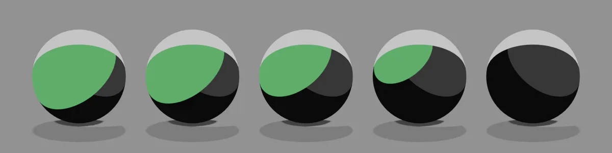
Back Light OffsetDefault 1Compared 1 → 6.5The width of the back light (blue) rim. The higher the value, the thinner the edge from behind; at 6.5 it almost disappears. The image uses a blue back tone.

Shadow
Shadow OpacityDefault 1Compared 0 → 1How dark the shadows cast by other objects are. 0 means no shadows.

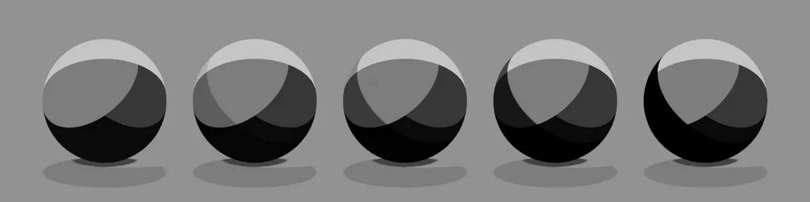
BrightnessDefault 0.5Compared 0 → 1The threshold that sets the shadow area. Raising it makes the shadows larger. With Contrast at 1 you see almost no change, so the image uses Contrast 0.3.

ContrastDefault 1Compared 0 → 1How sharp the shadow border is. At 0 everything is in shadow; the higher the value, the clearer the border.

Sub Outline
OpacityDefault 0.5Compared 0 → 1How strong the colored line just inside the outline is (blue by default).


Shadow SizeDefault 0.2Compared 0 → 1How far it spreads into the shadow side. Raise it and the whole shadow area takes the sub outline color.

AO
OpacityDefault 1Compared 0 → 1How dark the shading is in hollows and recessed areas (around the eyes, inside the ears, under the chin). The image uses a model with many hollows and a light body color.

IntensityDefault 1Compared 0 → 1How far the dark areas spread. The higher the value, the further they spread out from the hollows.

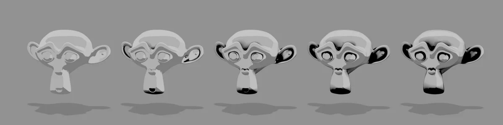
Gloss
OpacityDefault 0.5Compared 0 → 1How strong the highlights are.

BrightnessDefault 0.5Compared 0 → 1How much area the highlights cover. At 1 the whole surface becomes bright.

ContrastDefault 1Compared 0 → 1How sharp the highlight edges are. Lower it and they blur and spread over the whole surface.

SpreadDefault 0.1Compared 0 → 0.8The size of each individual highlight.

Offset XDefault 0Compared -1 → 1Moves the highlights left or right.


Anisotropy
OpacityDefault 0.5Compared 0 → 1A streaky highlight, like the "angel ring" on hair. The band runs along the vertical UV direction and shines on the side the key light hits. The streak takes the tone color (the image uses a white tone).

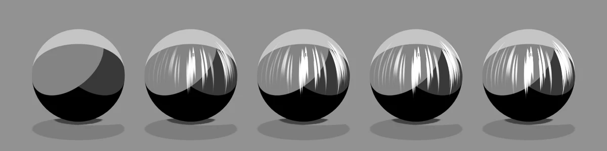
Anisotropy expects a clean UV unwrap
The streak follows the vertical UV direction, so it assumes UVs laid out in a consistent direction. For hair, start the shape from a UV Sphere primitive: its UVs already run top to bottom, so the angel ring follows the head. Hair made by sculpting or remeshing, or left with an automatic unwrap (such as Smart UV Project), has UVs facing every which way, and the streak breaks up or runs at an angle.
Both are the same hair shape made from a UV Sphere, with the same anisotropy settings. Left: UVs split into small islands with Smart UV Project, each turned to a random angle. Right: the UV Sphere's own UVs.

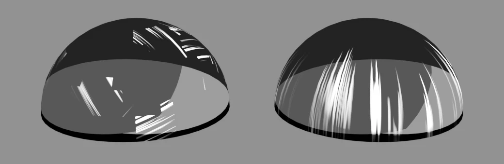
Rim Light
OpacityDefault 0.5Compared 0 → 1How strong the bright edge along the silhouette is (with Width 0.8).

ContrastDefault 1Compared -1 → 1The border of the edge. Negative values spread the edge over the whole inside.

WidthDefault 0.014Compared 0 → 0.2The thickness of the edge (with Opacity 1).

Offset XDefault 0Compared -1 → 1Shifts the direction of the edge left or right. Negative values thicken the left edge, positive values the right edge (with Width 0.2 and Opacity 1).

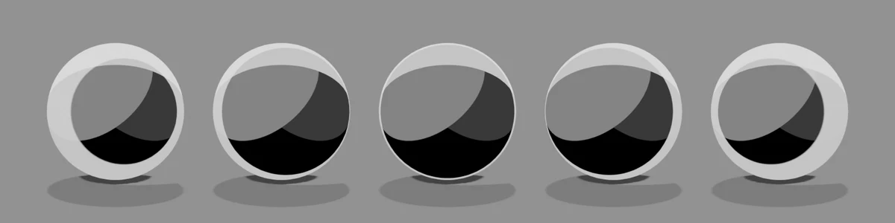
Offset ZDefault 0Compared -1 → 1Shifts the direction of the edge up or down. Negative values thicken the bottom edge, and at -1 the whole sphere is covered. Positive values thin the bottom edge and move it toward the top (with Width 0.2 and Opacity 1).

Matte
OpacityDefault 1Compared 0 → 1How strong the matte tone (texture layer) is. The tone takes a matcap image mapped by the camera-space normals (the image uses a crystal-pattern matcap; the shader uses the image's brightness, so it comes out black and white).

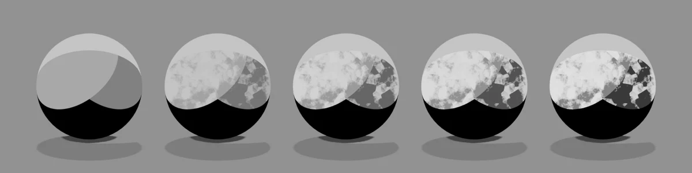
BrightnessDefault 0.1Compared -0.1 → 0.2The brightness of the matte layer. Ten times the value is added as brightness, so small changes make a big difference. Negative values darken it, positive values make it whiter.

Contrast ADefault 0.5Compared 0 → 1The gamma (power) of the matcap image. The higher the value, the deeper the dark side and the stronger the shading.

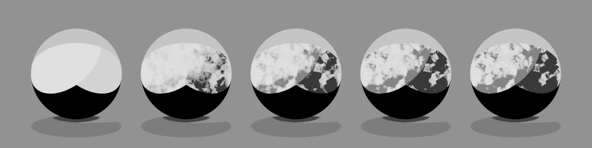
Contrast BDefault 0.5Compared 0 → 1The contrast of the matte layer. The higher the value, the clearer the difference between light and dark.

Brush Strokes
Stroke StrengthDefault 0.3Compared 0 → 2How strongly the light/dark border is broken up like brush marks.

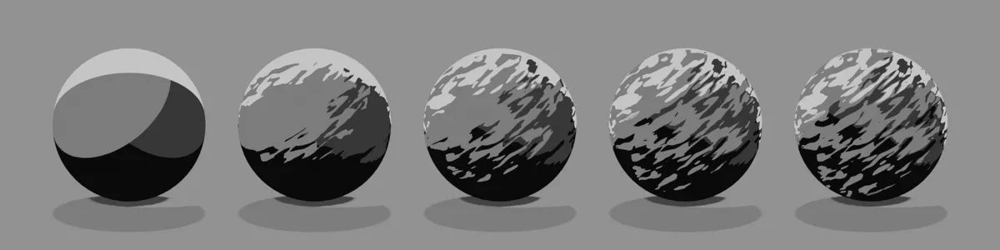
Stroke ScaleDefault 3Compared 1 → 8The size of the brush marks. The higher the value, the finer the strokes.

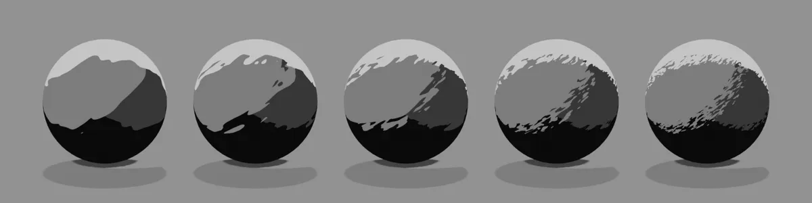
Stroke StretchDefault 4Compared 1 → 50The aspect ratio of the brush marks. Raise it for long, thin strokes.

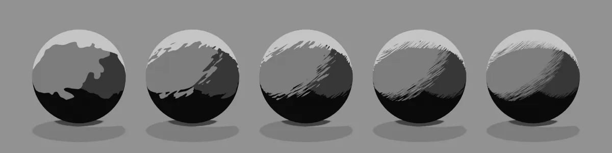
Stroke AngleDefault 35Compared -90 → 90The direction of the strokes (in degrees).

Stroke EdgeDefault 0.5Compared 0 → 1How hard the stroke edges are. At 1 the brush marks disappear and the original border comes back.

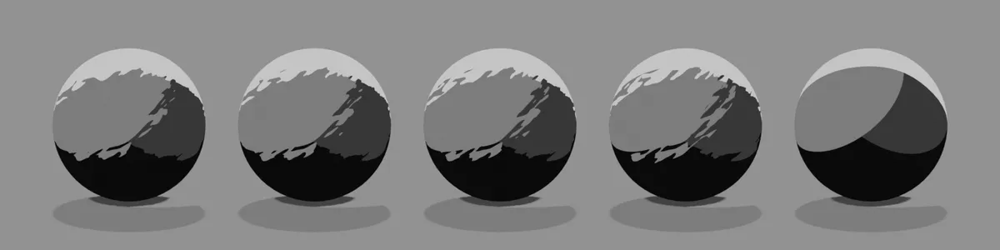
Paint Finish
Color VariationDefault 0.057Compared 0 → 1Varies the color from patch to patch of paint. When the tone is black and white (grayscale), you will barely see any change.

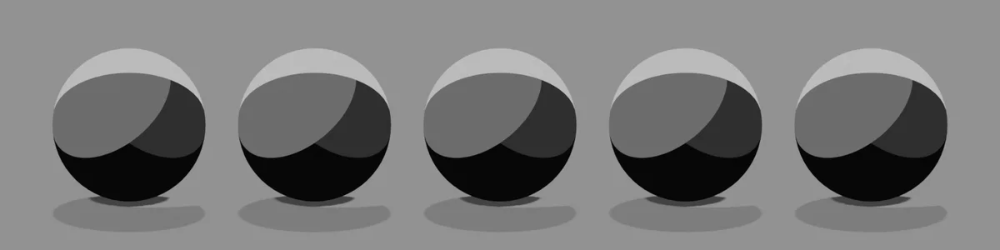
Value VariationDefault 0Compared 0 → 1Varies the brightness from patch to patch.

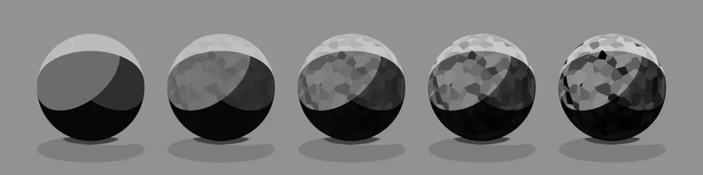
PaperDefault 0.812Compared 0 → 1How strong the paper grain (roughness) is. The image uses a light tone with Paper Scale 30 and Screen-Space Paper 0.

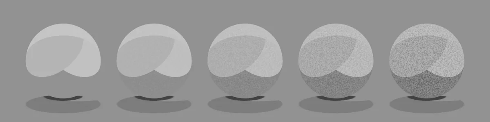
Watercolor

Bleed ScaleDefault 12Compared 2 → 80The size of the bleed pattern. The higher the value, the finer it gets.

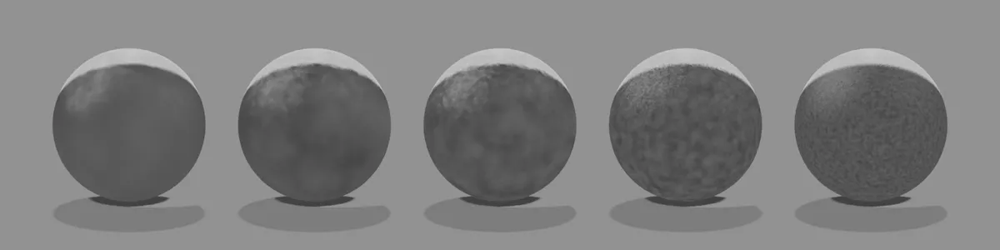
Edge DarkeningDefault 0.5Compared 0 → 1How much paint pools at the edges and darkens them.

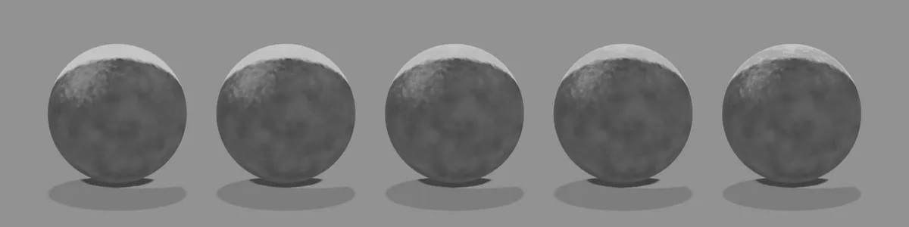
GranulationDefault 0.3Compared 0 → 1The graininess of the pigment particles.

WashDefault 0.15Compared 0 → 1Lightens everything, as if thinned with water.

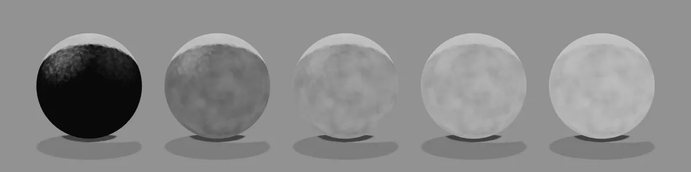
Transparency
Alpha ClipDefault 0.5Compared 0.1 → 0.9Cuts out the parts where the PNG's alpha is below this value. The image shows a flat polygon with a star-shaped PNG whose alpha is strongest at the center. The higher the value, the more the thin parts are trimmed away and the smaller the shape gets.